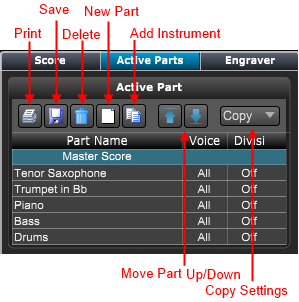
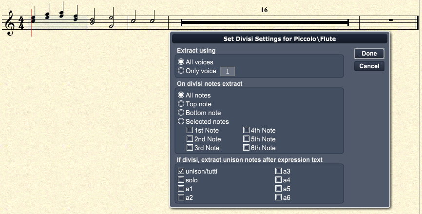
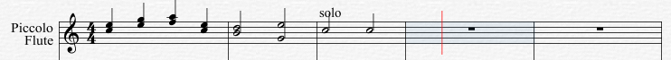
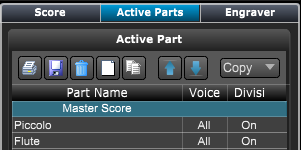
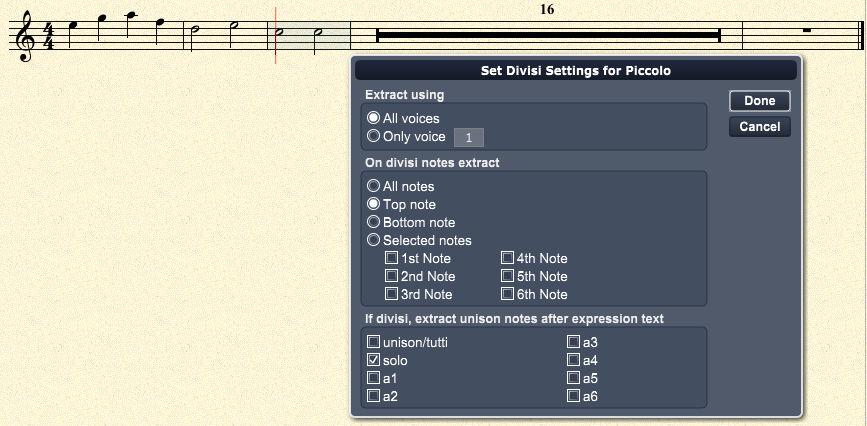
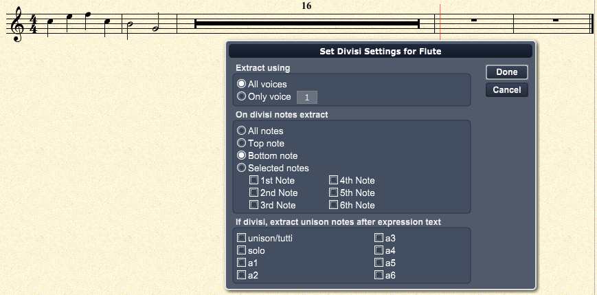

Creating Active Parts
Creating Active Parts
If the Score Layout panel is not showing click on the Layout button at top right of Control Bar or type "Shift-L" to open the panel.
Then choose the Active Parts panel.

To create a new part:
- Click the part to set the position for the new .
- Click the New Part button.
A pop-up menu appears with a list of all tracks/instruments in the master score.
- Choose the track to be included in the part.
The new part will be added in the list just below the selected position.
- To move the part up or down the list click on the Up/Down arrows.
To add another instrument to an existing part:
- Select the desired part to contain the new instrument.
A pop-up menu appears with a list of all tracks/instruments.
- Choose the desired track/instrument.
A sub part appears below the selected part.
To print a part(s):
- Select the desired part(s) to print.
- Click on the Print button.
- A Print dialog appears letting you choose print options.
- Choose OK to start printing.
To save a part(s):
- Select the desired part(s) to save.
- Click on the Save button.
To delete a part(s):
- Select the desired part(s) to delete.
- Click on the Delete button.
To copy settings from one part to all remaining parts:
- Select the desired part containing the settings.
- Click on the Copy pop-up menu button.
- Choose either "Page Settings to all parts" or "Layout Settings to all parts"
- The selected settings are copied from the selected part to all remaining parts.
To set the default voice for a part:
- Click on the the Voice field on the desired part.
A pop-up menu of voice choices appears.
- Choose the voice from the pop-up menu.
To set divisi settings for a part:
- Double click on the the Divisi field on the desired part.
A "Set Divisi Settings" dialog appears.
- Choose the settings as described below.

Notice that in the above screen shot, with all notes set enabled in the divisi section, all notes sharing stems and unison notes are extracted.
See Divisi Example for an example of how the split the notes among two different parts.
Extract using
- All voices - Select this to have all voices included in the part.
- Only voice - Select this to choose whcich voice is included in the part
On divisi notes extract
On multiple notes that share a stem include
- All notes - include all the notes.
- Top note - include the top note on the stem
- Bottom note - include the bottom note on the stem
- Selected notes 1st-6th - include the selected from from the stem
If divisi, extract unison notes after the expression text
On instruments that contain shared stems include unison notes if the following expression text appears on master score.
- unison/tutti - used to include unison notes on all parts
- solo - used to include unison notes on one part
- a1-a6 - used to include unison notes on parts 1-6
Divisi Example
If you created a Piccolo and Flute track and included the Part Extraction Text 'solo' at measure three.

And you have created two parts:

The following Piccolo part divisi settings will produce:

and the Flute part divisi settings will produce:

Notice that the Flute part does not have the solo check box enabled so the unison notes are not extracted on this part.